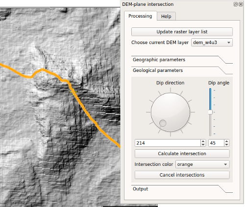

This module allows to calculate the intersections of a plane with the DEM, given the plane attitude expressed according
to geological convention and a source point.

Fig. 1. Example of estimation of a fault attitude in the western border of Mt. Alpi zone (Southern Italy).
Loading of DEM data
Load in the QGis project the required DEM layer and whatsoever vector or image layers needed for your analysis.
From the "Choose current DEM layer" combo box, choose the DEM to use.
Do not use geographic DEMs, since the plugin will provide only approximate results.
If you load a new raster that you want to use after opening the tool, you can update the raster list
with the "Update raster layer list" command.
Plane-DEM intersection
You have to define the source point in the map, with "Set source point in map" in the "Plane-DEM intersection" tab, "Geographic parameters" section.
You can erase the current value with "Reset source point" or just define a new one by simply clicking in the map.
In the X, Y and Z spinboxes, the coordinates of the source point are displayed. You can modify them from within the spinboxes.
You can also choose to use Z values not fixed to the DEM surfaces, by setting the 'lock z value to DEM surface' checkbox off.
In the "Geological parameters" section, you can define the dip direction and the dip angle, and then calculate the
theoretical intersections by pressing "Calculate intersection".
You can change the last intersection color by choosing a color from the "Intersection color" combo box, and delete all the intersections
with "Cancel intersections".
In the "Output" section, you can save the last intersections as a point shapefile, also loading it
within the current project. The output shapefile projection is the same of the current QGIS project.
Known limitations
- DEMs in geographic coordinates (i.e., lat-lon) are not supported. Using the plugin with them will only provide approximate results, particularly with regards to the dip angle.
Known bugs
- Very large DEM could produce memory errors. Please resize your DEM to a smaller extent or resample it to a larger cell size.
- If you try to define source points outside the DEM extent (for instance, because you have on-the-fly reprojection to a project CRS different from that of the DEM),
a message warning can be repeated more that once.